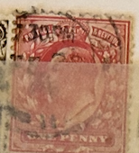
| SOURCE | TITLE| IMAGE MATCH | click to source page |
| eBay | Great Britian #128, Canceled Postmarks From Jan 1st To Dec 31st, 366 Stamps | eBay | 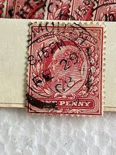 |
| Mystic Stamp | R69a - 1862-71 $1 U.S. Internal Revenue Stamp, Inland Exchange, Red, Imperf. - Mystic Stamp Company | 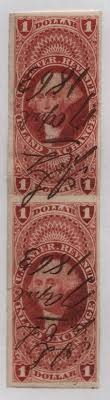 |
| eBay Canada | Scott #R47 US 1862 25 Cent Revenue Insurance Stamp Pen Cancel 1870 | eBay | 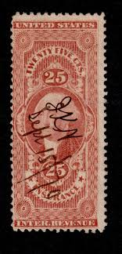 |
| eBay | Fantastic! U.S. Revenue stamp scott r44 - 25 cent Certificate issue | eBay | 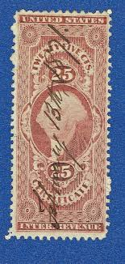 |
| eBay | Travelstamps: US Scott R44c 25¢ Used Revenue Certificate Used OG | eBay | 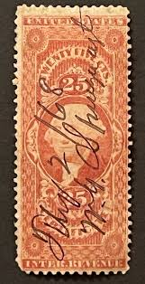 |
| eBay | R75a Used, PSE Graded 85, Cert # 01321539 | eBay | 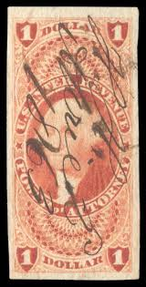 |
| Steve Malack | R 68c F/VF, S-O-N hand stamp cancel, large tear - Steve Malack | 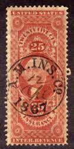 |
| eBay | US R69a ~ $1 Inland Exchange ~ Used F-VF! | eBay | 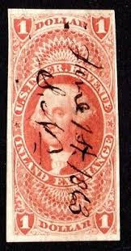 |
| eBay | MOMEN: US STAMPS #R76a REVENUE USED LOT #92150* | eBay | 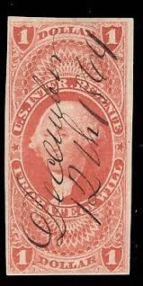 |
| eBay UK | US Scott # R70c - Used - Pen Cancel (26-C237) | eBay UK | 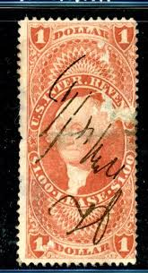 |
| eBay | EXCELLENT GENUINE SCOTT R72c F-VF 1862-71 RED 1ST ISSUE REVENUE MANIFEST | eBay | 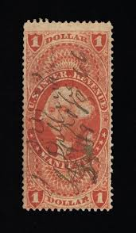 |
| Mercari | antique furniture | Mercari | 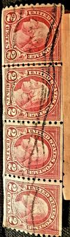 |
| eBay | U.S. - R74c - Fine/Very Fine - Used (catalog value 350.00) | eBay | 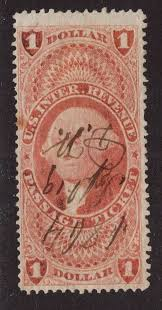 |
| eBay | USA #R92a Extra Fine Used | eBay | 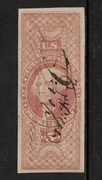 |
| Mystic Stamp | R44d - 1862-71 25c U.S. Internal Revenue Stamp, Certificate, Red, Silk Paper - Mystic Stamp Company | 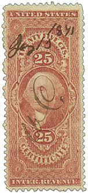 |
| eBay | R48a SOUND 4 MARGINS USED VF STAMP FIRST ISSUE REVENUE | eBay | 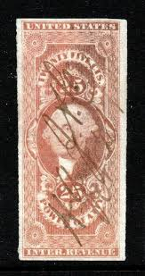 |
| eBay | RARE us stamp sc#R73c 1st issue 1862 civil war revenue mortgage CV $300 pristine | eBay | 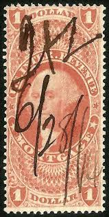 |
| eBay | Travelstamps: US Stamps Scott #R67a Entry of Goods $1 Washington 1862-71 Used | eBay | 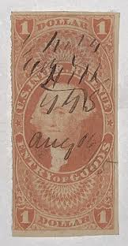 |
| eBay | Travelstamps: 1862-1871 US Stamps Scott #R70c Lease, $1 Dollar Used Ng | eBay | 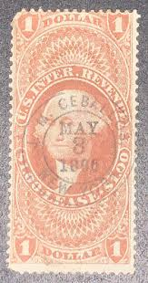 |
| eBay | Scott R66c- Used- $1 Conveyance, First Issue- U.S. Internal Revenue | eBay | 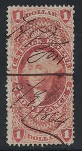 |
| eBay | EDSROOM-18072 US Revenue R66a Used 1870 Conveyance Imperf CV$27.50 | eBay | 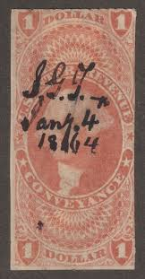 |
| eBay | US Scott R66c Used VG....Free Shipping | eBay | 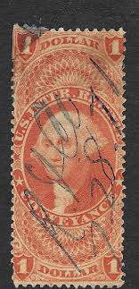 |
| eBay | US SC R73c $1 Revenue Mortgage Used - Dated October 23 1863 | eBay | 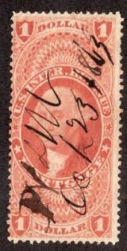 |
| eBay | Scott #R75 US 1862 1 Dollar Washington Revenue Power of Attorney Stamp | eBay | 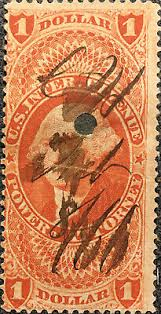 |
| eBay | U.S. R44c Certificate, VF with W.D. Little bullseye cancel, August 28, 1869 | eBay | 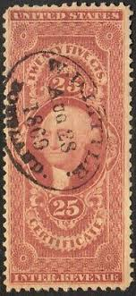 |
| eBay | MOMEN: US STAMPS #R90c REVENUE USED LOT #71870 | eBay | 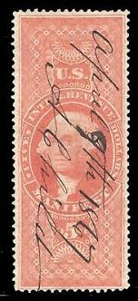 |
| eBay | Bigjake: R70a , $1.00 Lease - Imperf - 1st Revenue Issue | eBay | 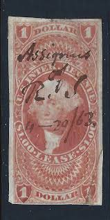 |
| matchandmedicine.com | RN-T4 Michigan Southern & Northern Indiana Stock Certificate - Match and Medicine Proprietary Die and other US Civil War Era Stamps | 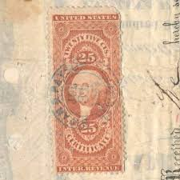 |
| eBay | D9773: US #R45a Used, 4 Large Margins, Sound; CV $75++ | eBay | 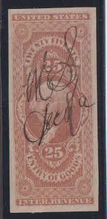 |
| eBay | US Scott # R47c - Used - CV=$11.00 (26-C237) | eBay | 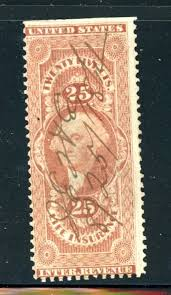 |
| eBay | Perfins Großbritannien King Edward VII Old Stamps Briefmarken Sellos Timbres | eBay | 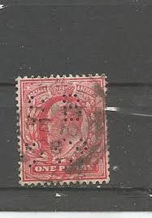 |
| eBay | STAMP US SCOTT 887 "Daniel C. French" 5 CENT 1940 USED FANCY CANCEL | eBay | 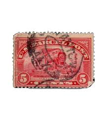 |
| eBay | US R74c $1 Passage Ticket Used Avg SCV $325 | eBay | 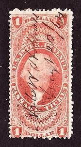 |
| eBay | US. #R45B USED INLAND EXCHANGE REVENUE PARTIAL PERF VF - CV$500.00 (ESP#4799) | eBay | 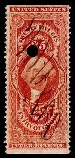 |
| eBay | Travelstamps:1862-1871 US Scott R44c 25 Cent 25¢ Used Revenue Certificate Stamp | eBay | 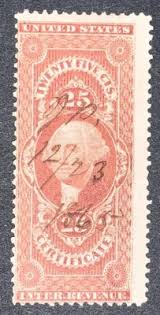 |
| eBay | MOMEN: US STAMPS #R47c REVENUE HANDSTAMP VF+ | eBay | 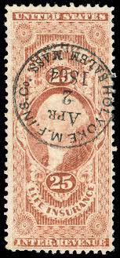 |
| eBay | US. #R47c USED REVENUE ISSUE OF 1862-71 - F/VF - CV$11.00 (ESP#0092) | eBay | 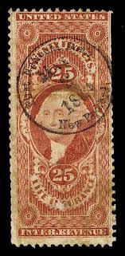 |
| familieverkoelen.nl | RARE ANTIQUE BOX WITH RED 1921/22 GEORGE WASHINGTON 2 CENT | 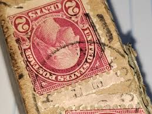 |
| eBay | MATT'S STAMPS US SCOTT #R76c $1-DOLLAR PROBATE OF WILL REVENUE STAMP, USED CV$55 | eBay | 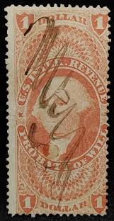 |
| eBay | R50c 25c Warehouse Receipt, Used [1] **ANY 5=FREE SHIPPING** | eBay | 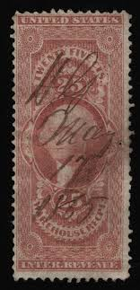 |
| eBay | GEORGE WASHINGTON - 25 Cents Internal Revenue Certificate, 1862-1871, Canceled | eBay | 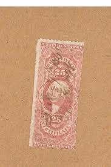 |
| eBay | CAPE OF GOOD HOPE 1863 SC 15 "HOPE" SEATED 1/sh EMERALD IMPERF UNG VG/FINE | eBay | 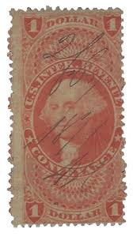 |
| Mystic Stamp | R49b - 1862-71 25c U.S. Internal Revenue Stamp, Protest, Red, Part Perf. - Mystic Stamp Company | 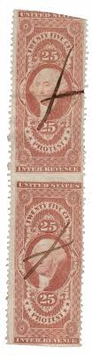 |
| eBay | R50c 25-Cents WAREHOUSE RECEIPT Used ( Dated Railway Co. Cancellation ) | eBay | 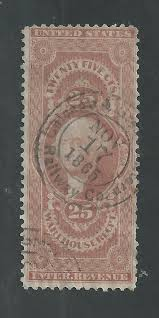 |
| eBay | Travelstamps: 1862-71 US Stamps Scott # R88c Charter Party Washington Used NG | eBay | 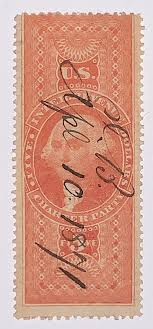 |
| eBay | US Stamp R68a $1 Foreign Exchange Revenue Used Pair SCV $300 | eBay | 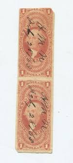 |
| eBay | MOMEN: US STAMPS #R67a IMPERF REVENUE USED XF LOT #82961* | eBay | 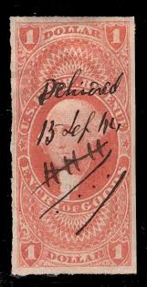 |
| eBay | 1862 STAMP US SCOTT R48c "Washington-Power of Attorney" 25 CENT USED HAS FAULT-B | eBay | 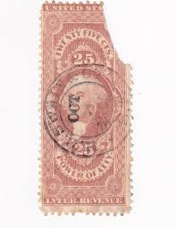 |
| eBay | KAPPYSSTAMPS US REVENUE SCOTT R45a PEN CANCELLED CV $25 50050 | eBay | 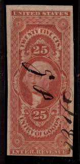 |
| eBay | R66a VF used revenue stamp neat cancel nice color cv $ 28 ! see pic ! | eBay | |
| Mystic Stamp Company | R25b - 1862-71 5c U.S. Internal Revenue Stamp, Express, Red, Part Perf. - Mystic Stamp Company | |
| eBay | Travelstamps: US Scott R44c 25¢ Used Revenue Certificate Used NG Pen Cancel | eBay | |
| Etsy | 1865 US Power of Attorney 25 Cent George Washington Inter Revenue Stamp - Etsy | |
| eBay | U.S. - R50a - Fine/Very Fine - Used | eBay | |
| eBay | MOMEN: US STAMPS #R69c USED LOT #78586 | eBay | |
| eBay | United States, Scott R69, Revenue, Inland Exchange, Corner repair, 1862-71, used | eBay | |
| eBay | US Scott # R44c - Used - 1885 Pen Cancel (69-C223) | eBay | |
| eBay | R70c $1.00 Lease - Used (a) | eBay | |
| eBay | GENUINE SCOTT #RT19d PRIVATE DIE TETLOW'S PERFUMERY ON WMK-191R PAPER #15292 | eBay | |
| eBay | 1862-71 Revenue 1st Issue Washington $1 INLND EXCH IMPERF Sc#R69a Pen Cancel | eBay |